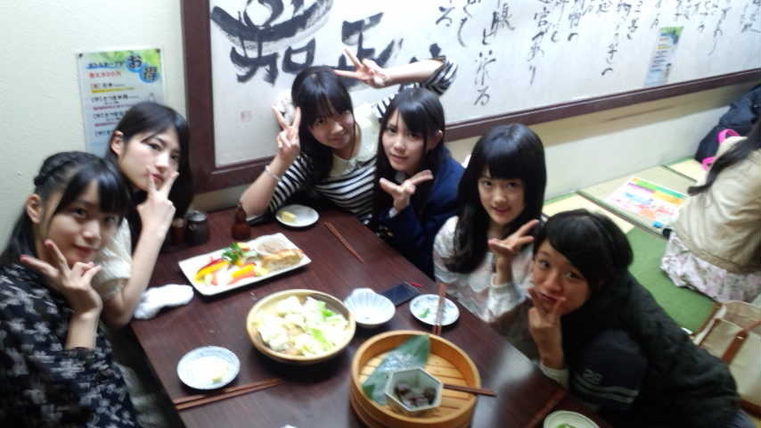

| 2012/03 25 Sun | ひめたん(* ゝω・*)ノ その112 |
個別握手会in名古屋
(ω)
ありがとうございました!
レポしますよー☆
まず私服!
?初個握。ひめたんの大好きな
ぴんく
を着なくて何を着るーっ!!!
?いやいやそこは空気を読んで
あお
とか?白とかね?ひめたん似合うの?わら
どっちでしょう(^^)
ひめきゅん
のみなさんならわかるよね?
ひめたんの趣味とか好きなものとか知ってるでしょ?
ということで
「?ーっ!」
「?ーっ!」
て叫んだ方から正解を見てくださいこちらっ
正解した(^^)
 ?
?
?
正解したよねよねっ
まさかひめたんが
ぴんく
着るなんて...
思うね!わら
いやひめたんも悩んだの。
何着よっかなー
ぴんく
着たいなーって。
で考えた結果
あえて外してみました。
しかも
ひめたんりぼん
なんて呼ばれる(がち!)白りぼんはお見せしてみたものの
いつものハーフアップでなく
サイドポニー
っていうね。
こういう変化球は大事でしょ(ω)?
それでっ
握手会ではいつもよりゆっくりお話することができました!
さすが個握っ(o>ω<o)
私服の話とか
お手紙の話とか
ブログの話とか
選抜発表のことで元気づけてくださったりもしました♪
なんか泣きそうだった(*'ω`*)
やっぱり顔みてお話するのってなんかほっこりするね。

左から

まいまい
(深川麻衣chan)
みゅみゅ
(若月佑美chan)
ひめたん
かわごってぃ
(川後陽菜chan)
ちま
(樋口日奈chan)
みくもってぃ
(安藤美雲chan)
夜はアンダーのみんなでお食事しました。
愛知といえば手羽先っ♪♪
前に愛知行った時に手羽先食べそこねてたから
よかたー美味しいかたー(o>ω<o)

明日も頑張ろうねっ!!
今夜は
かわごってぃ
(川後陽菜chan)と一緒にお泊まりします♪
ひめたん(*´・ω・*)
コメント(129)
2012/03/25 00:36